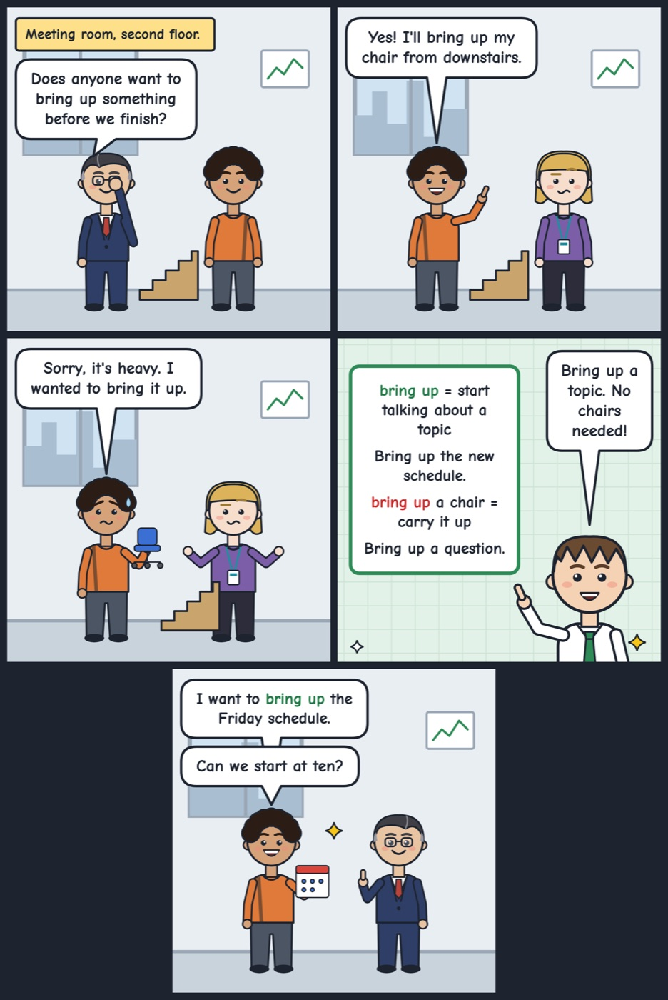

bring up
To start talking about a topic.
I want to bring up the new schedule at the meeting.
Tip: Use 'bring up' with a topic as the object (bring up the cost, bring it up); it's the same in casual and polite talk, and don't confuse it with 'bring up a child' (raise).
Hear it in conversation
Workbook
1. What does it mean?
In this conversation, what does "bring up" mean?
2. Fill the gap
I didn't want to money at dinner, so I waited until we were alone.
3. Choose the best reply
Olena: You seem worried about something. What's on your mind?
4. Your turn: speak
Is it easy for you to bring up a difficult topic with a friend or a colleague? Tell me about a time you did.
Show an example answer
It depends on the person, but I usually find it hard at first. Last year I had to bring up a problem with a flatmate who kept leaving the kitchen messy. I waited for a calm moment and spoke politely, and it went much better than I expected.
Answer key: bring up
- 1. B. To mention a subject and start talking about it
- 2. bring up
- 3. A. Well, I need to bring up the holiday dates before we book anything.
- 4. Example: It depends on the person, but I usually find it hard at first. Last year I had to bring up a problem with a flatmate who kept leaving the kitchen messy. I waited for a calm moment and spoke politely, and it went much better than I expected.
See it in a comic
